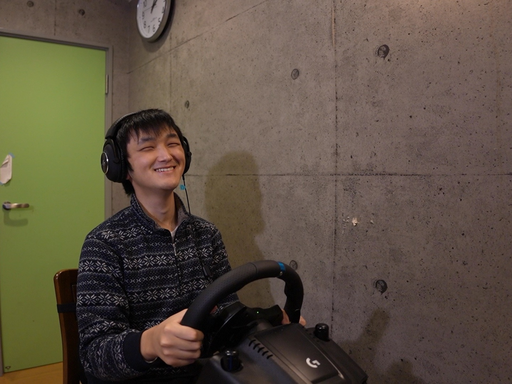
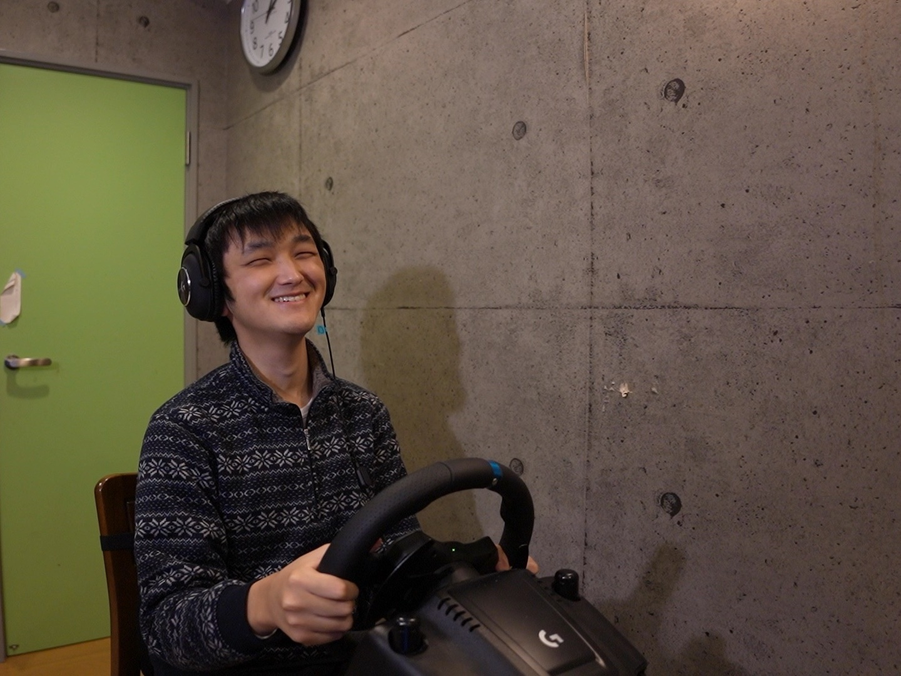
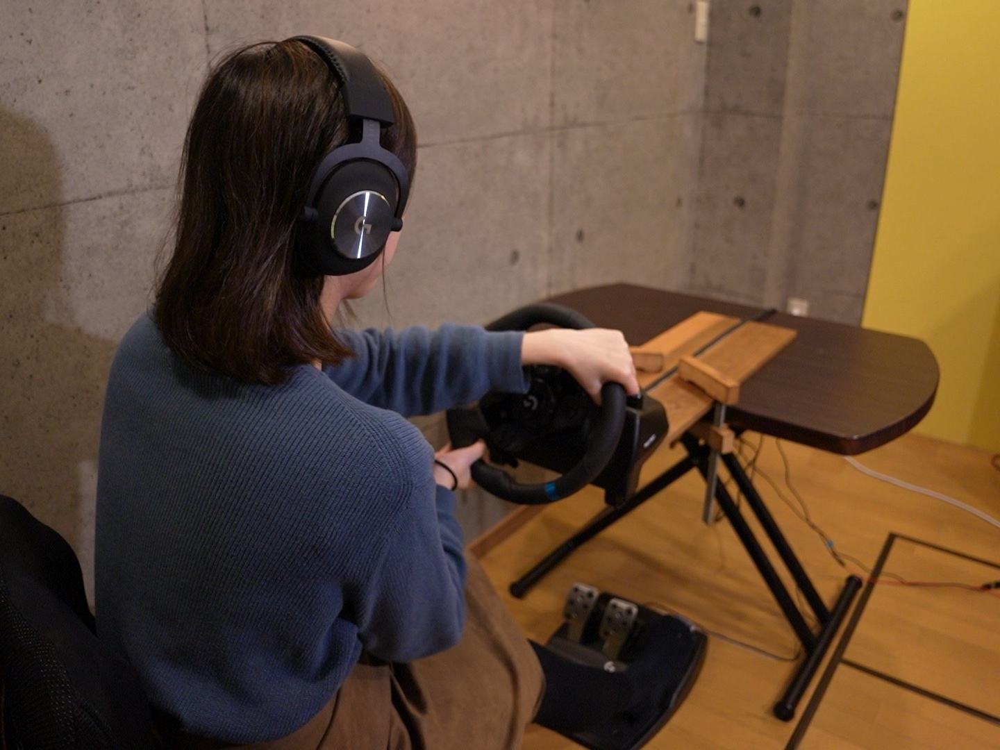
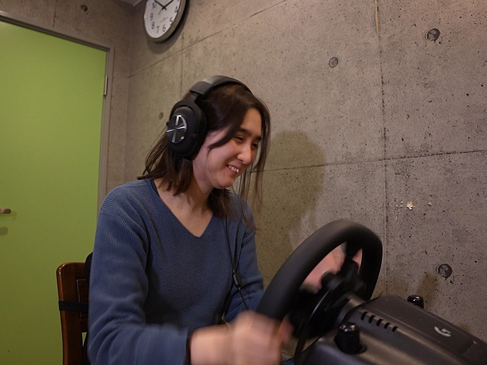
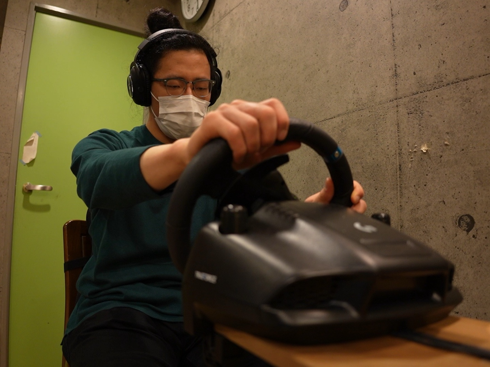
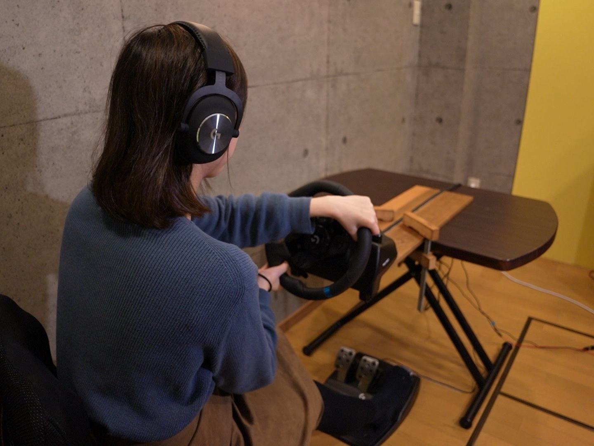
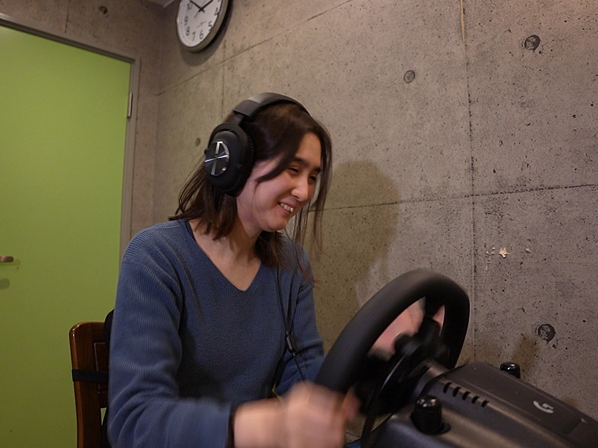
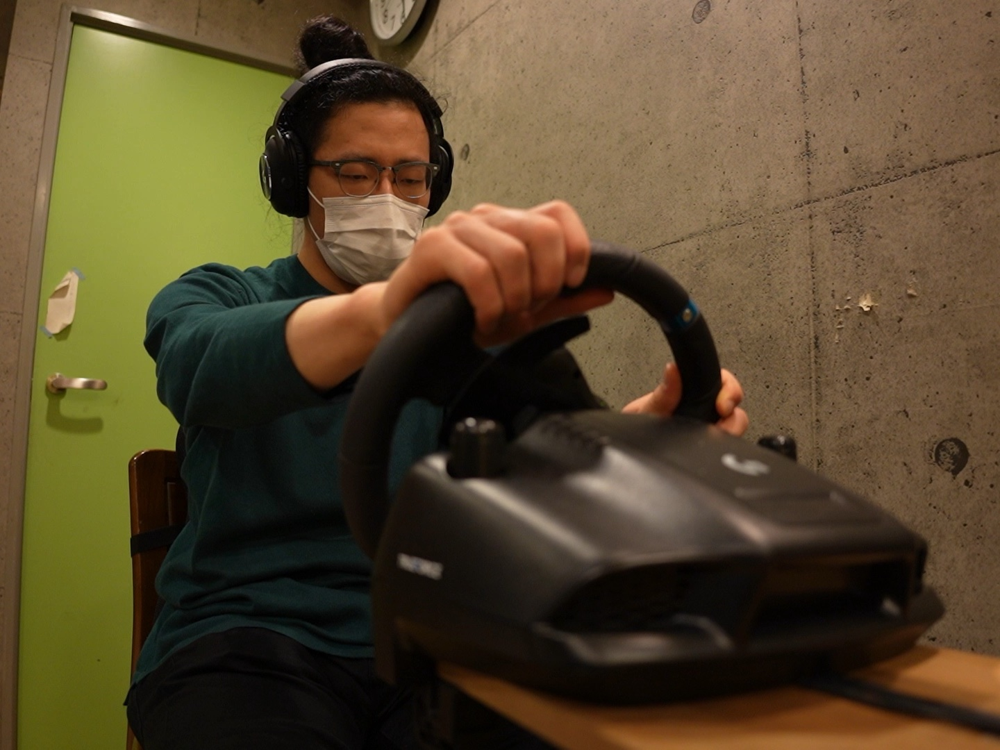

大爆走！オーディオレーシング２
Tomoyasu Taka
本作品は視覚を使わず音情報のみでプレイするレーシングゲームである。この画面のないゲームでは、プレイヤーは聞こえてくる音楽の位置を頼りに、進む方向を決め車を走らせる。コースの形状、車の位置などに応じて音源の左右振幅差を制御することで、プレイヤーは音を頼りに左右にハンドルを切りながら走行し、ゴールにたどり着くことができる。視覚情報の占める割合が高いデジタルゲームであえて視覚情報をカットし、さらに身体的な運転操作と結びつけることで、プレイヤーの想像力を掻き立てる体験を創り出す。
作品をプレイ可能なサイト：https://taka-chin.com/Audio_Racing/
-
作品クレジット:
- Game Design & Research: Tomoyasu Taka
- Voice: Hiroki Kaimoto
- Music: Nana Masuda
- Research: Yasuaki Kakehi
- Special Thanks: Yukio Nozawa, Audio Game Center Project
 

 




